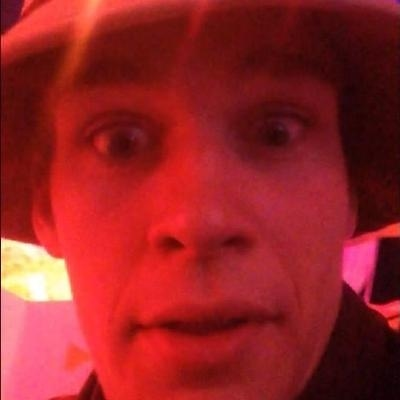

About
Hello!
I'm James Wenlock
I'm a composer and software developer studying Digital Sound at the University of Washington. I'm passionate about sound, computers, and improving in small increments.
Right now the dream is to develop creative audio applications professionally. Along the way, I'd like to go to cooking school, get my pilots license, build a school, and earn at least third place in a regional dance competition.
On this website you'll find sounds I've made, projects I've worked, and other information about me.
Thanks for stopping and have a great day!
Projects

Sounds
- Three Changes -
Electro acoustic piece for Holographic Higher Order Ambisonic
- Composition 1 -
Electroacoustic piece expanding upon compositional ideas and techniques found in Jean Claude Risset's Mutations
- Hard Disk Noise -
An Avant-Garde sound world inspired by Georgy Ligeti's work
- Risset Etudes -
Three pastiche electroacoustic compositions emulating the early work of Jean Claude Risset
- Jonty Etude -
A small etude inspired by Jonty Harrison's Klang
- Contemporary Sample -
A small section from a personal project
- Laughter 2.0 -
Experiment using children's laughter and lots of bandpasses
CV
Education
University of Washington, Seattle WA
Major: Computational Auricular Acoustics
Minor: Digital Arts
Class: 2020 | GPA: 3.72
Relevant Coursework
Sound in Space | DXARTS 567
Digital Sound | DXARTS 460, 461, 462
Mechatronics | DXARTS 470, 471, 472
Computer Programming | CSE 142, 143
Data Structures and Algorithms | CSE 373
Programming Concepts and Tools | CSE 374
Nature of Sound | SPHSC 261
Hearing Science | SPHSC 461
Press
Seattle Times: Meet the Encephalophone
Vice: This instrument turns brainwaves into music
The Stranger: Trippy Light Installation is Like Being Inside Carl Sagan's Brain
City Arts Magazine: Maja Petric's installation at madart transports us to the stars
DR1: Simon's Superpowers
The Stranger: Machines of Survival
Skills
- Software (Adept) -
Supercollider, Reaper, Ambisonic Toolkit (ATK), Java, Arduino, Processing, Adobe Audition, Fl Studios
- Software (Familiar) -
C, Linux, Bash, C++, Python, GitHub, HTML5, CSS, JQuery, Javascript, Bootstrap, Matlab, EEGStudio, Photoshop, Pixlr, Digital Performer, Logic, Pro Tools, Audio Finder, Final Cut, Ableton Live, Lightroom, Aperture, Photokey 8
- Digital Signal Processing -
Stereo Imaging, Ambisonics, FM/AM Synthesis, Delay Lines, Reverb Structure, Additive/Subtractive/Granular Synthesis, Time Segment Processing, Filter Design
Miscellaneous
Europe's Third International Spatial Audio Competition
Cambient: Ambient Camping
The New Music Ecosystem
Undergraduate Research Symposium
User-Centered Design In and Beyond the Classroom: Toward an Accountable Practice
Ambisonics and the ATK
Music of Today - Until Spring
Music of Today - Performing with the Brain
Experience
DreamWorks, Eagle Rock CA
Assistant to Composer
July 2016 - May 2017
Worked under Robert Watson on DreamWork's Netflix series, Veggie Tales: In The City
Center for Digital Art and Experimental Media
University of Washington
Teaching Assistant
September 2017 - Present
Teacher's assistant for the digital sound series (DXARTS 460, 461, 462) at the University of Washington
1000 Words Events, Tacoma WA
Photobooth Technician
June 2017 - Present
Setup, teardown, and operation of various booths, adept knowledge and usage of current digital imaging technologies
Banya 5, Seattle WA
Spa Attendant
August 2018 - Present
Maintain facities, provide customer support, and build software at the Banya 5 Urban Spa
UW Recreation, University of Washington
Mindfulness Assistant
January 2018 - March 2019
Assistant for UW mindfulness program - a service which provides year round yoga and meditation classes to students and faculty. Responsibilities include tabling, record keeping, and activity coordination for events in support of the program
Broadway Center, Tacoma WA
Sales Associate
July 2015 - August 2015
Part of the 2015 Broadway Center seasonal campaign raising funds in support of the arts in the Tacoma region. Provided tickets, information, and memberships to Broadway Center patrons
Northwest Folklife, Seattle WA
Roving Assistant
June 2018 - June 2019
Collected/processed donation and provided customer support at 2018 folklife festival.